Chapter 3 Summarizing Data
A major goal of a study is usually to conduct statistical inference. Inference can involve determine which variables are important in relation to a response variable and/or predicting a response variable. To formally do inference we need to define the population of interest as well as parameters we want to study.
Population - all the values, items, or individuals of interest
Parameter - a (usually) unknown summary value about the population
Ideally, we’d be able to measure every member of the population and exactly calculate the value of any population parameter. This would involved conducing a census. A census is usually not feasible. Instead we take a subset of the population and try to use these observations to make statements or claims about the population.
Sample - a subset of the population we observe data on
Statistic - a summary value calculated from the sample observations
Example - A political scientist surveys 400 people randomly from a list of all registered voters in a particular county. He asks the people if they plan to vote in the upcoming election and 312 say they do.
Relate above to definitions…
To discuss paramters and statistics more easily, symbols are used to denote them. Luckily, there is a common notation that, for the most, is consistent across statistical literature.
Note: \(\bar{Y}=\frac{1}{n}\sum_{i=1}^{n}Y_i\) and \(S^2=\frac{1}{n-1}\sum_{i=1}^{n}(Y_i-\bar{Y})^2\) where \(n\) is the sample size (or number of observed values in the sample). Sometimes you’ll see other notation for proportions (……. fill in and change table)
Question of interest will lead you to which parameter you have interest in. Careful consideration of what your study goals are will also most likely lead you to which type of data you will collect.
3.1 Motivating Example: Topic - Name
3.1.1 Define Objective & Background

3.1.2 Select Response

3.1.3 Determine Sources of Variation

3.1.4 Select Design

3.1.5 Do Study

3.1.6 Do Statistical Analysis
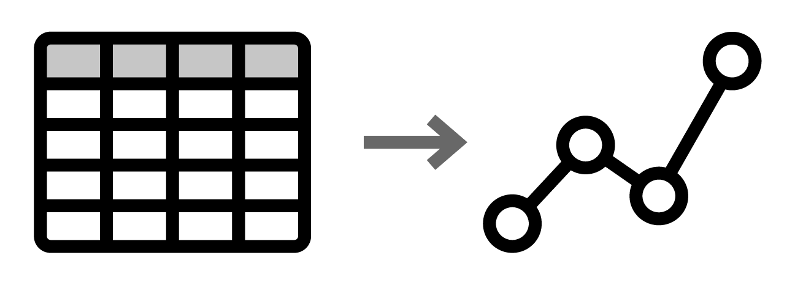
3.1.7 Draw Conclusions & Communicate
3.2 Statistical Ideas and Concepts
3.2.1 Study Purpose
A major goal of a study is usually to conduct statistical inference. Inference can involve determine which variables are important in relation to a response variable and/or predicting a response variable. To formally do inference we need to define the population of interest as well as parameters we want to study.
Population - all the values, items, or individuals of interest
Parameter - a (usually) unknown summary value about the population
Ideally, we’d be able to measure every member of the population and exactly calculate the value of any population parameter. This would involved conducing a census. A census is usually not feasible. Instead we take a subset of the population and try to use these observations to make statements or claims about the population.
Sample - a subset of the population we observe data on
Statistic - a summary value calculated from the sample observations
(A better visual than this)
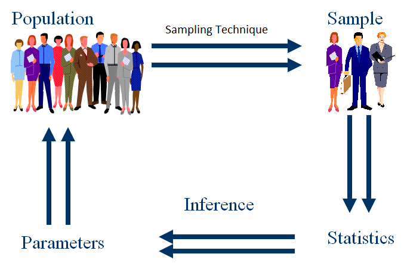
Example - A political scientist surveys 400 people randomly from a list of all registered voters in a particular county. He asks the people if they plan to vote in the upcoming election and 312 say they do.
Relate above to definitions…
To discuss paramters and statistics more easily, symbols are used to denote them. Luckily, there is a common notation that, for the most, is consistent across statistical literature.
Note: \(\bar{Y}=\frac{1}{n}\sum_{i=1}^{n}Y_i\) and \(S^2=\frac{1}{n-1}\sum_{i=1}^{n}(Y_i-\bar{Y})^2\) where \(n\) is the sample size (or number of observed values in the sample). Sometimes you’ll see other notation for proportions (……. fill in and change table)
Question of interest will lead you to which parameter you have interest in. Careful consideration of what your study goals are will also most likely lead you to which type of data you will collect.
3.2.2 Scales (Types) of Data:
Quantitative or Numerical variable - A variable that is described by numerical measurements where arithmetic can be performed
Subscales: - Discrete - finite or countable finite number of values (# of flowers on a plant, 0, 1, 2, …) - Continuous - any value in an interval is possible (Temperature, \((-459.67\deg F, \infty)\)
Qualitative or Categorical variable - A variable that is described by attributes or labels
Subscales: - Nominal - categories have no ordering (Male, Female) (zip codes) - Ordinal - can order categories (Lickert scale data) (college football rankings)
How we summarize and analyze the data will depend on which type of data we have!
Example: SAT Performance
50 total students (16 males and 34 females) where matched on socio-economic background (all had similar income).
- A study was done to examine the effect of preparation atmosphere on SAT scores.
- Two types of atmospheres were investigated (strict vs easy going).
- Students were divided into two groups of 25 (12 males and 13 females in strict class and 4 males 21 females in the easy going class).
- After a 9 week tutoring session the SAT was taken (although 1 in the strict group did not take the exam and 5 in the easy going group did not take the exam).
Questions to fill in: - Determine the research question. - Define the population and sample. - Define possible parameter(s) of interest. - Describe the scale of measurement for gender, atmosphere, SAT score. - Define possible statistics that might be calculated. - Why might the students have been matched on socio-economic background? - What issues might you see with the design of this study? - What other variables might you collect (to explain more variability in the response)?
Descriptive Statistics
Goal of descriptive statistics is to describe the distribution of the data.
We often want to summarize the center and spread of the data.
Common numerical summaries
Measures of Location
- Sample Mean = \(\bar{Y}=\frac{\sum_{i=1}^{n}Y_i}{n}\)
- Sample Median = Middle value of the data set (50% of values to left, 50% of values to right)
- Sample Proportion = \(\hat{p}=\frac{\#\mbox{ of successes}}{\mbox{sample size}}\)
Measures of Spread
- Sample Variance = \(S^2 = \frac{\sum_{i=1}^{n}(Y_i-\bar{Y})^2}{n-1}\)
- Sample Standard Deviation = \(S\)
- Sample Range = \(max(Y_1,...,Y_n)-min(Y_1,...,Y_n)\)
- Inter-quartile Range = Q3-Q1
Common graphical summaries
3.2.3 Exploratory Data Analysis
In this chapter we’ll discuss summarizing data only, not populations. We’ll calculate numerical summaries (statistics) and graphical summaries for the sample. In the next chapter we’ll relate these summaries to the population parameters and distributions.
When summarizing data we want to describe the distribution of the data. This may be a marginal or univariate summary of a single variable by itself.

However, quite often we want to look at the distribution of a variable conditional on another variable - perhaps levels of a certain factor or the treatments of an experiment - or the relationship of more than one variable together. These would be referred to as multivariate summaries.

How we summarize data depends on the variable types (sometimes called variable scales) and the attribute or quantity we are trying to describe about that variable. The two major types of variables are:
- Categorical (Qualitative) variable - entries are a label or attribute
- Numerical (Quantitative) variable - entries are a numerical value where math can be performed
Both of these have subscales that are sometimes important to consider.
Categorical variables can be nominal or ordinal. Nominal variables have no ordering to their categories. For example, a variable asking for your favorite pet. There is no inherent ordering to give pets. Ordinal variables have an ordering but differences between the categories are not necessarily the same. For example, Likert scale data having categories “strongly disagree,” “disagree,” “neutral,” “agree”, and “strongly agree.” There is a clear ordering here but the difference between strongly agree and agree is not necessarily the same as the difference between agree and neutral.
Numerical variables can be discrete or continuous. Discrete variables take on values that can be listed out, although the list may continue on indefinitely. For example, the number of bedrooms in a house. The values (or support) for this variable are 0, 1, 2, 3, … but there is not necessarily a known upper limit. Discrete variables don’t need to take on just integers and make take on values that are irregularly spaced. A continuous variable is one in which the variable can take on any value in an interval (or union of intervals). For example, the time it takes to complete an online survey. The support for this variable would be the interval from 0 to some large number, often we’d just say infinity for the upper bound.
When summarizing the variables, the main goal is to summarize the distribution or pattern and frequency with which you observe a variable. This involves slightly different summaries dependong on variable type (or combination of variable types).
Categorical variable - describe relative frequency (or count) in each category
Numerical variable - describe the shape, center, and spread of the distribution
The most common numerical summaries are given below:
Cateogrical
- Contingency Tables
Numerical
- Mean/Median
- Standard Deviation/Variance
- Coefficient of Variation
- Quantiles/Percentiles/IQR
- Mean/Median
These are certainly not the only summaries you might calculate!
This is terribe but I want to put something like it somewhere… If you have two or more categorical variables, contingency tables are still the summary to use. If you have one numerical and one or more categorical variable, you’ll often calculate the numerical summaries for each combination of categorical variables levels. If you have multiple numerical variables you’ll usually calculate the covariance or correlation, which measures the linear relationship between pairs of variables. This can also be done for different settings of categorical variables as well.
3.2.3.1 Contingency Tables for Categorical Variables
Let’s start by summarizing a categorical variable (entries are a label or attribute) from a dataset on the titanic passengers. The dataset describes attributes of passengers on the titanic. The variables we’ll investigate are
- embarked (where journey started)
- survived (survive or not)
- sex (Male or Female)
## Parsed with column specification:
## cols(
## pclass = col_integer(),
## survived = col_integer(),
## name = col_character(),
## sex = col_character(),
## age = col_double(),
## sibsp = col_integer(),
## parch = col_integer(),
## ticket = col_character(),
## fare = col_double(),
## cabin = col_character(),
## embarked = col_character(),
## boat = col_character(),
## body = col_integer(),
## home.dest = col_character()
## )## # A tibble: 1,310 x 14
## pclass survived name sex age sibsp parch ticket fare cabin embarked
## <int> <int> <chr> <chr> <dbl> <int> <int> <chr> <dbl> <chr> <chr>
## 1 1 1 Alle~ fema~ 29 0 0 24160 211. B5 S
## 2 1 1 Alli~ male 0.917 1 2 113781 152. C22 ~ S
## 3 1 0 Alli~ fema~ 2 1 2 113781 152. C22 ~ S
## 4 1 0 Alli~ male 30 1 2 113781 152. C22 ~ S
## 5 1 0 Alli~ fema~ 25 1 2 113781 152. C22 ~ S
## # ... with 1,305 more rows, and 3 more variables: boat <chr>, body <int>,
## # home.dest <chr>A contingency table simply shows the frequency (sometimes proportion) of observations falling into the categories of the variable. If we are looking at one variable by itself, the table is called a one-way contingency tables.
One-way contingency table for the embarked variable.
##
## C Q S
## 270 123 914One-way contingency table for the survived variable.
##
## 0 1
## 809 500One-way contingency table for the sex variable.
##
## female male
## 466 843We can see that these one-way tables allow us to easily see how many values fall in each category. For example, we see that 809 people died and 500 survived.
A two-way contingency table is similar in that it gives the frequencies for combinations of two categorical variables.
Two-way table between survived and sex.
##
## female male
## 0 127 682
## 1 339 161Two-way table between survived and embarked.
##
## C Q S
## 0 120 79 610
## 1 150 44 304Two-way table between sex and embarked.
##
## C Q S
## female 113 60 291
## male 157 63 623With this summary we can easily see the relationship between these pairs of categorical variables. For example, there were 127 females that died and 682 males that died.
This idea can be extended indefinitely and generally we can discuss an n-way contingency table. The major issue with going beyond two- or three-way tables is the difficulty in displaying the information in a easy to digest manner. For example, consider the three-way table between sex, embarked, and survived below.
## , , = 0
##
##
## C Q S
## female 11 23 93
## male 109 56 517
##
## , , = 1
##
##
## C Q S
## female 102 37 198
## male 48 7 106We can now see two two-way tables displayed, one for survived = 0 (died) and one for survived = 1 (lived). We would interpret values from the first table as follows: There were 11 females that embarked at the Cherbourg port that died, there were 23 females that embarked at the Queenstown port that died, and so on.
Sometimes it is useful to look at a one-way table conditional on settings of other variables as well. For instance, we could report a one-way table for the survived variable conditional on looking at males that embarked at Queenstown.
## 0 1
## 56 7Again, contingency tables or n-way tables are the most common summary for combinations of categorical variables.
3.2.3.2 Measures of Center and Spread for Numeric Variables
Recall that a numerical variable is one whose entries are a numerical value where math can be performed. The major things we want to describe about a numerical variable’s distribution are the shape, center, and spread. Shape is best left to graphical summaries like a histogram or density plot. We’ll cover these shortly.
Let’s consider a dataset about and experiment on carbon dioxide (CO2) uptake in grass. The three variables we’ll investigate are:
- Response recorded:
uptakeCO2 uptake rates in grass plants
- Environment manipulated:
Treatment- chilled/nonchilled
- Ambient CO2 specified and measured:
conc
uptake is a numeric variable and will be the variable we want to summarize. Treatment is a categorical variable. conc is a numeric variable but only observed at a few values. This can be treated as either type of variable depending on what your goal is. We will treat conc as numeric.
## # A tibble: 84 x 5
## Plant Type Treatment conc uptake
## <ord> <fct> <fct> <dbl> <dbl>
## 1 Qn1 Quebec nonchilled 95 16
## 2 Qn1 Quebec nonchilled 175 30.4
## 3 Qn1 Quebec nonchilled 250 34.8
## 4 Qn1 Quebec nonchilled 350 37.2
## 5 Qn1 Quebec nonchilled 500 35.3
## # ... with 79 more rows3.2.3.2.1 Measuring Center
The mean of the uptake variable can be calculated to help summarize the center of the uptake variable’s distribution. For clarity, let’s label the uptake variable with \(Y\). The observed values can be labeled as below:
\(y_1 = 16.0\)
\(y_2 = 30.4\)
\(y_3 = 34.8\)
…
\(y_{84} = 19.9\)
The sample mean is then simply the sum of these values divided by the total number:
\[\bar{y} = \frac{1}{n} \sum_{i=1}^{n} y_i = \frac{1}{84}\sum_{i=1}^{84}y_i = \frac{1}{84}\left(16.0 + 30.4 + 34.8 + ... + 19.9)\]
This comes out to be 27.2130952. This value represents one measure of the center or middle of the uptake variable’s distribution.
As the actual data values are used in this calculation, one or two very large or small numbers can have a large influence on the value of the sample mean. To counter this, you can calculate a more robust measure called a trimmed mean. This involves removing the highest and lowest values and then calculating the mean with the remaining values. For instance, a 5% trimmed mean drops the lowest and highest 5% of data values and then finds the mean with the remaining values.
Here 0.05*84 = 4.2. This means we should drop off the lowest four and highest four values and then calculate the mean with the remaining 76 values. The 5% trimmed mean comes out to be 27.2526316. This is another measure of the center of the uptake variable’s distribution.
Lastly, another common measure of center is the median. The median involves sorting the data from largest to smallest and reporting the middle value (if there is an odd number of data points) or the average of the two middle values (if there is an even number of data points). You may notice that having very large or small values in the data set do not matter as much for calculation of the median. The largest value for uptake could be replaced by 10000 and the median wouldn’t change. For this reason, the median is also referred to as a robust estimate of the center of the uptake variable’s distribution. The value of the median here is 28.3.
3.2.3.2.2 Measuring Spread
The most common measure of spread is the standard deviation or variance.
116.9515132 10.8144123
19.225 12.36, 15.64
Measures of linear relationship: Covariance, Correlation
cov(CO2$conc, CO2$uptake)## [1] 1552.687cor(CO2$conc, CO2$uptake)## [1] 0.4851774Numerical summaries: Numerical variables
Usually want summaries for different subgroups of data
- Ex: Get similar uptake summaries for each Treatment
Numerical summaries: Numerical variables
Usually want summaries for different subgroups of data
Ex: Get similar uptake summaries for each Treatment
dplyreasy to use but can only return one value
Numerical summaries: Numerical variables
Usually want summaries for different subgroups of data
Ex: Get similar uptake summaries for each Treatment
dplyreasy to use but can only return one value
Idea:
Use
group_byto create subgroups associated with the data frameUse
summarizeto create basic summaries for each subgroup
Numerical summaries: Numerical variables
Usually want summaries for different subgroups of data
- Ex: Get similar uptake summaries for each Treatment
CO2 %>% group_by(Treatment) %>%
summarise(avg = mean(uptake), med = median(uptake), var = var(uptake))## # A tibble: 2 x 4
## Treatment avg med var
## <fct> <dbl> <dbl> <dbl>
## 1 nonchilled 30.6 31.3 94.2
## 2 chilled 23.8 19.7 118.Numerical summaries: Numerical variables
Usually want summaries for different subgroups of data
- Ex: Get similar uptake summaries for each Treatment and Concentration
CO2 %>% group_by(Treatment, conc) %>%
summarise(avg = mean(uptake), med = median(uptake), var = var(uptake))## # A tibble: 14 x 5
## # Groups: Treatment [2]
## Treatment conc avg med var
## <fct> <dbl> <dbl> <dbl> <dbl>
## 1 nonchilled 95 13.3 12.8 5.75
## 2 nonchilled 175 25.1 24.6 32.6
## 3 nonchilled 250 32.5 32.7 35.1
## 4 nonchilled 350 35.1 34.5 37.4
## 5 nonchilled 500 35.1 33.8 31.9
## 6 nonchilled 675 36.0 35.8 40.2
## 7 nonchilled 1000 37.4 37.6 49.8
## 8 chilled 95 11.2 10.6 8.18
## 9 chilled 175 19.4 19.5 34.7
## 10 chilled 250 25.3 24.2 112.
## 11 chilled 350 26.2 26.4 117.
## 12 chilled 500 26.6 26 131.
## 13 chilled 675 27.9 28.8 120.
## 14 chilled 1000 29.8 30.3 154.Numerical summaries: Numerical variables
Usually want summaries for different subgroups of data
Ex: Get similar uptake summaries for each Treatment
Built-in
aggregate()function more general
Numerical summaries: Numerical variables
Usually want summaries for different subgroups of data
Ex: Get similar uptake summaries for each Treatment
Built-in
aggregate()function more generalBasic use gives response (
x) and alistof variables to groupby
aggregate(x = CO2$uptake, by = list(CO2$Treatment), FUN = summary)## Group.1 x.Min. x.1st Qu. x.Median x.Mean x.3rd Qu. x.Max.
## 1 nonchilled 10.60000 26.47500 31.30000 30.64286 38.70000 45.50000
## 2 chilled 7.70000 14.52500 19.70000 23.78333 34.90000 42.40000Numerical summaries: Numerical variables
Usually want summaries for different subgroups of data
Ex: Get similar uptake summaries for each Treatment
Built-in
aggregate()function more generalCommonly used with
formulanotation!
aggregate(uptake ~ Treatment, data = CO2, FUN = summary)## Treatment uptake.Min. uptake.1st Qu. uptake.Median uptake.Mean
## 1 nonchilled 10.60000 26.47500 31.30000 30.64286
## 2 chilled 7.70000 14.52500 19.70000 23.78333
## uptake.3rd Qu. uptake.Max.
## 1 38.70000 45.50000
## 2 34.90000 42.40000Numerical summaries: Numerical variables
Usually want summaries for different subgroups of data
Ex: Get similar uptake summaries for each Treatment
Built-in
aggregate()function more generalCommonly used with
formulanotation!
aggregate(uptake ~ Treatment, data = CO2, FUN = summary)uptake ~ Treatment - formula notation in R
- Idea: uptake (LHS) modeled by Treatment levels (RHS)
Numerical summaries: Numerical variables
Usually want summaries for different subgroups of data
Ex: Get similar uptake summaries for each Treatment and Concentration
Built-in
aggregate()function more generalCommonly used with
formulanotation!
aggregate(uptake ~ Treatment + conc, data = CO2, FUN = summary)uptake ~ Treatment + conc model uptake by levels of Treatment and conc
Numerical summaries: Numerical variables
Usually want summaries for different subgroups of data
- Ex: Get similar uptake summaries for each Treatment and Concentration
aggregate(uptake ~ Treatment + conc, data = CO2, FUN = summary)## Treatment conc uptake.Min. uptake.1st Qu. uptake.Median uptake.Mean
## 1 nonchilled 95 10.60000 11.47500 12.80000 13.28333
## 2 chilled 95 7.70000 9.60000 10.55000 11.23333
## 3 nonchilled 175 19.20000 20.05000 24.65000 25.11667
## 4 chilled 175 11.40000 15.67500 19.50000 19.45000
## 5 nonchilled 250 25.80000 27.30000 32.70000 32.46667
## 6 chilled 250 12.30000 17.95000 24.20000 25.28333
## 7 nonchilled 350 27.90000 30.45000 34.50000 35.13333
## 8 chilled 350 13.00000 18.15000 26.45000 26.20000
## 9 nonchilled 500 28.50000 31.27500 33.85000 35.10000
## 10 chilled 500 12.50000 18.30000 26.00000 26.65000
## 11 nonchilled 675 28.10000 31.42500 35.80000 36.01667
## 12 chilled 675 13.70000 19.72500 28.80000 27.88333
## uptake.3rd Qu. uptake.Max.
## 1 15.40000 16.20000
## 2 13.30000 15.10000
## 3 29.62500 32.40000
## 4 23.32500 27.30000
## 5 36.52500 40.30000
## 6 33.82500 38.10000
## 7 40.65000 42.10000
## 8 34.45000 38.80000
## 9 39.27500 42.90000
## 10 37.07500 38.90000
## 11 40.85000 43.90000
## 12 36.97500 39.60000
## [ reached getOption("max.print") -- omitted 2 rows ]Recap/Next Up!
Understand types of data and their distributions
Numerical summaries
- Contingency Tables:
table
- Mean/Median:
mean,median - Standard Deviation/Variance/IQR:
sd,var,IQR - Quantiles/Percentiles:
quantile
- Contingency Tables:
Across subgroups with
dplyr::group_byanddplyr::summarizeoraggregate
- Graphical summaries (across subgroups)
Table of common summaries
Sample of Random Variable’s realizations, sample distribution vs population, modeling ideas
Summaries of distributions (center, spread, graphs)
Good discussion of what makes a good sampling design revisit. Maybe a statified example like the river and selecting houses example as a quick expose of the issues with not doing a truly random sampling technique.
Approx probabilities and quantiles vs theoretical
Graphical summaries Terminology (Raw data, variable, etc.) Categorical/Quantitative Variables Graphs for Categorical Data Graphs for Quantitative Data Distributions – center, spread, shape
Numerical Summaries Measures of central tendency (location) Mean, Median Measures of variability (spread) Range, SD, IQR Quartiles Properties of the mean and standard deviation Boxplots
3.3 Suggestions for Further Readings
3.4 Software
3.4.1 R
Recall the general workflow for programming in R.
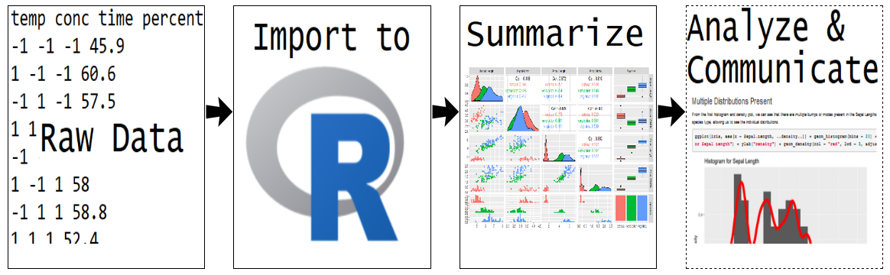
This section is meant to instruct on how to produce common numerical and graphical summaries in R.
3.4.1.1 Numerical Summaries
To create numerical summaries in R, you first need to determine the type of data you have. Remember there are two major categories:
- Categorical (Qualitative) variable - entries are a label or attribute
- Numerical (Quantitative) variable - entries are a numerical value where math can be performed
The main goal is to describe the distribution or pattern and frequency with which you observe the variable. For categorical variables, we used contingency tables to describe the count in each category. In R, this is done using the table function.
We’ll recreate the summaries of the titanic dataset (available in the file titanic.csv in the datasets folder).
titanicData <- read_csv("../../datasets/titanic.csv")## Parsed with column specification:
## cols(
## pclass = col_integer(),
## survived = col_integer(),
## name = col_character(),
## sex = col_character(),
## age = col_double(),
## sibsp = col_integer(),
## parch = col_integer(),
## ticket = col_character(),
## fare = col_double(),
## cabin = col_character(),
## embarked = col_character(),
## boat = col_character(),
## body = col_integer(),
## home.dest = col_character()
## )titanicData## # A tibble: 1,310 x 14
## pclass survived name sex age sibsp parch ticket fare cabin embarked
## <int> <int> <chr> <chr> <dbl> <int> <int> <chr> <dbl> <chr> <chr>
## 1 1 1 Alle~ fema~ 29 0 0 24160 211. B5 S
## 2 1 1 Alli~ male 0.917 1 2 113781 152. C22 ~ S
## 3 1 0 Alli~ fema~ 2 1 2 113781 152. C22 ~ S
## 4 1 0 Alli~ male 30 1 2 113781 152. C22 ~ S
## 5 1 0 Alli~ fema~ 25 1 2 113781 152. C22 ~ S
## # ... with 1,305 more rows, and 3 more variables: boat <chr>, body <int>,
## # home.dest <chr>Recall the three variables we created tables for were:
- embarked (where journey started)
- survived (survive or not)
- sex (Male or Female)
To create the one-way contingency tables, we simply pass the column of interest to the table function.
table(titanicData$embarked)##
## C Q S
## 270 123 914table(titanicData$survived)##
## 0 1
## 809 500table(titanicData$sex)##
## female male
## 466 843To create a two-way contingency table, we can pass the columns of interest from the dataset.
table(titanicData$survived, titanicData$sex)##
## female male
## 0 127 682
## 1 339 161table(titanicData$survived, titanicData$embarked)##
## C Q S
## 0 120 79 610
## 1 150 44 304table(titanicData$sex, titanicData$embarked)##
## C Q S
## female 113 60 291
## male 157 63 623This same process can continue to create an n-way contingency table.
table(titanicData$sex, titanicData$embarked, titanicData$survived)## , , = 0
##
##
## C Q S
## female 11 23 93
## male 109 56 517
##
## , , = 1
##
##
## C Q S
## female 102 37 198
## male 48 7 106These table objects in R are actually arrays - the extension of a matrix to more than two dimensions.
tab <- table(titanicData$sex, titanicData$embarked, titanicData$survived)
str(tab)## 'table' int [1:2, 1:3, 1:2] 11 109 23 56 93 517 102 48 37 7 ...
## - attr(*, "dimnames")=List of 3
## ..$ : chr [1:2] "female" "male"
## ..$ : chr [1:3] "C" "Q" "S"
## ..$ : chr [1:2] "0" "1"You can obtain conditional bivariate info by supplying an index.
#returns embarked vs survived table for females
tab[1, , ]##
## 0 1
## C 11 102
## Q 23 37
## S 93 198#returns embarked vs survived table for males
tab[2, , ]##
## 0 1
## C 109 48
## Q 56 7
## S 517 106#returns survived vs sex table for embarked "C"
tab[, 1, ]##
## 0 1
## female 11 102
## male 109 48We can also obtain conditional univariate info too!
#Survived status for males that embarked at "Q"
tab[2, 2, ]## 0 1
## 56 7For numerical variables, recall that we want to describe the shape, center, and spread of the variable’s distribution.
Recall the carbon dioxide (CO2) uptake data set
- Response recorded:
uptakeCO2 uptake rates in grass plants
- Environment manipulated:
Treatment- chilled/nonchilled
- Ambient CO2 specified and measured:
conc
CO2 <- tbl_df(CO2)
CO2## # A tibble: 84 x 5
## Plant Type Treatment conc uptake
## <ord> <fct> <fct> <dbl> <dbl>
## 1 Qn1 Quebec nonchilled 95 16
## 2 Qn1 Quebec nonchilled 175 30.4
## 3 Qn1 Quebec nonchilled 250 34.8
## 4 Qn1 Quebec nonchilled 350 37.2
## 5 Qn1 Quebec nonchilled 500 35.3
## # ... with 79 more rowsTo investigate the center we looked at the mean, trimmed mean, and the median. The mean and median functions handle these. You simply pass the column of interest. To obtain a trimmed mean, you can use the trim argument.
mean(CO2$uptake)## [1] 27.2131#5% trimmed mean
mean(CO2$uptake, trim = 0.05) ## [1] 27.25263median(CO2$uptake)## [1] 28.3To obtain measures of spread we can use var and sd. Similarly, we pass the column of interest to these functions.
var(CO2$uptake)## [1] 116.9515sd(CO2$uptake)## [1] 10.81441Quantiles can be found using the quantile function. You pass the column of interest and a vector of probabilities corresponding to the quantiles of interest.
quantile(CO2$uptake, probs = c(0.1, 0.2))## 10% 20%
## 12.36 15.64The IQR can be found by passing the IQR function the column of interest.
IQR(CO2$uptake)## [1] 19.225R has some nice functions that return multiple summaries. For instance, the summary function!
#quartiles and mean
summary(CO2$uptake)## Min. 1st Qu. Median Mean 3rd Qu. Max.
## 7.70 17.90 28.30 27.21 37.12 45.50The psych package has a very nice function called describe that provides many summaries about your numerical variables in the dataset as well. Remember you need to install a package if you’ve never used it and then read it in to your current R session using the library or require function.
describe(titanicData)## Warning in describe(titanicData): NAs introduced by coercion
## Warning in describe(titanicData): NAs introduced by coercion
## Warning in describe(titanicData): NAs introduced by coercion
## Warning in describe(titanicData): NAs introduced by coercion
## Warning in describe(titanicData): NAs introduced by coercion
## Warning in describe(titanicData): NAs introduced by coercion
## Warning in describe(titanicData): NAs introduced by coercion## Warning in FUN(newX[, i], ...): no non-missing arguments to min; returning Inf
## Warning in FUN(newX[, i], ...): no non-missing arguments to min; returning Inf
## Warning in FUN(newX[, i], ...): no non-missing arguments to min; returning Inf
## Warning in FUN(newX[, i], ...): no non-missing arguments to min; returning Inf
## Warning in FUN(newX[, i], ...): no non-missing arguments to min; returning Inf## Warning in FUN(newX[, i], ...): no non-missing arguments to max; returning -Inf
## Warning in FUN(newX[, i], ...): no non-missing arguments to max; returning -Inf
## Warning in FUN(newX[, i], ...): no non-missing arguments to max; returning -Inf
## Warning in FUN(newX[, i], ...): no non-missing arguments to max; returning -Inf
## Warning in FUN(newX[, i], ...): no non-missing arguments to max; returning -Inf## vars n mean sd median trimmed mad min
## pclass 1 1309 2.29 0.84 3.00 2.37 0.00 1.00
## survived 2 1309 0.38 0.49 0.00 0.35 0.00 0.00
## name* 3 1309 NaN NA NA NaN NA Inf
## sex* 4 1309 NaN NA NA NaN NA Inf
## age 5 1046 29.88 14.41 28.00 29.39 11.86 0.17
## sibsp 6 1309 0.50 1.04 0.00 0.27 0.00 0.00
## parch 7 1309 0.39 0.87 0.00 0.18 0.00 0.00
## max range skew kurtosis se
## pclass 3.00 2.00 -0.60 -1.32 0.02
## survived 1.00 1.00 0.49 -1.77 0.01
## name* -Inf -Inf NA NA NA
## sex* -Inf -Inf NA NA NA
## age 80.00 79.83 0.41 0.13 0.45
## sibsp 8.00 8.00 3.84 19.93 0.03
## parch 9.00 9.00 3.66 21.42 0.02
## [ reached getOption("max.print") -- omitted 7 rows ]describe(CO2)## vars n mean sd median trimmed mad min max range skew
## Plant* 1 84 6.50 3.47 6.5 6.50 4.45 1.0 12.0 11.0 0.00
## Type* 2 84 1.50 0.50 1.5 1.50 0.74 1.0 2.0 1.0 0.00
## Treatment* 3 84 1.50 0.50 1.5 1.50 0.74 1.0 2.0 1.0 0.00
## conc 4 84 435.00 295.92 350.0 408.53 259.45 95.0 1000.0 905.0 0.72
## uptake 5 84 27.21 10.81 28.3 27.33 14.83 7.7 45.5 37.8 -0.10
## kurtosis se
## Plant* -1.26 0.38
## Type* -2.02 0.05
## Treatment* -2.02 0.05
## conc -0.68 32.29
## uptake -1.35 1.18Recall, if you had multiple numerical variables we often want to measure the linear relationship. This is done via covariance and correlation. If you pass the var or cov function a data frame with multiple numeric columns, you’ll obtain the variance-covariance matrix. The diagonals represent the variance and the off-diagonals the covariances. The cor function similarly gives the correlation matrix.
var(select(CO2, conc, uptake))## conc uptake
## conc 87571.084 1552.6867
## uptake 1552.687 116.9515cov(select(CO2, conc, uptake))## conc uptake
## conc 87571.084 1552.6867
## uptake 1552.687 116.9515Of course, often summaries by a subgroup of the data is of interest. We looked at finding summaries of uptake for each Treatment level. dplyr is easy to use for this purpose but can only use functions that return a single value. The idea is:
- Use
group_byto create subgroups associated with the data frame
- Use
summarizeto create basic summaries for each subgroup
For example:
CO2 %>% group_by(Treatment) %>%
summarise(avg = mean(uptake), med = median(uptake), var = var(uptake))## # A tibble: 2 x 4
## Treatment avg med var
## <fct> <dbl> <dbl> <dbl>
## 1 nonchilled 30.6 31.3 94.2
## 2 chilled 23.8 19.7 118.To find the summary for different settings of two variables, say Treatment and Concentration, simply pass more than one categorical variable to group_by.
CO2 %>% group_by(Treatment, conc) %>%
summarise(avg = mean(uptake), med = median(uptake), var = var(uptake))## # A tibble: 14 x 5
## # Groups: Treatment [2]
## Treatment conc avg med var
## <fct> <dbl> <dbl> <dbl> <dbl>
## 1 nonchilled 95 13.3 12.8 5.75
## 2 nonchilled 175 25.1 24.6 32.6
## 3 nonchilled 250 32.5 32.7 35.1
## 4 nonchilled 350 35.1 34.5 37.4
## 5 nonchilled 500 35.1 33.8 31.9
## 6 nonchilled 675 36.0 35.8 40.2
## 7 nonchilled 1000 37.4 37.6 49.8
## 8 chilled 95 11.2 10.6 8.18
## 9 chilled 175 19.4 19.5 34.7
## 10 chilled 250 25.3 24.2 112.
## 11 chilled 350 26.2 26.4 117.
## 12 chilled 500 26.6 26 131.
## 13 chilled 675 27.9 28.8 120.
## 14 chilled 1000 29.8 30.3 154.An alternative to using dplyr is to use the built-in aggregate function. This function is more flexible and can be used with functions that return more than one value like summary. Basic use gives a response (x) and a list of variables to group by.
aggregate(x = CO2$uptake, by = list(CO2$Treatment), FUN = summary)## Group.1 x.Min. x.1st Qu. x.Median x.Mean x.3rd Qu. x.Max.
## 1 nonchilled 10.60000 26.47500 31.30000 30.64286 38.70000 45.50000
## 2 chilled 7.70000 14.52500 19.70000 23.78333 34.90000 42.40000Alternatively, formula notation can be used. We can supply uptake ~ Treatment and the data object. The idea of formula notation is essentially a shorthand for modeling the left-hand side (uptake here) by the right-hand side (Treatment here). In this case, this implies finding uptake values returned by FUN for the different levels of Treatment.
aggregate(uptake ~ Treatment, data = CO2, FUN = summary)## Treatment uptake.Min. uptake.1st Qu. uptake.Median uptake.Mean
## 1 nonchilled 10.60000 26.47500 31.30000 30.64286
## 2 chilled 7.70000 14.52500 19.70000 23.78333
## uptake.3rd Qu. uptake.Max.
## 1 38.70000 45.50000
## 2 34.90000 42.40000A second variable can be given on the right hand side. The summaries will then be found for every combination of the values of the variables on the right hand side. Since conc is only observed at a few levels, this is reasonable here.
aggregate(uptake ~ Treatment + conc, data = CO2, FUN = summary)## Treatment conc uptake.Min. uptake.1st Qu. uptake.Median uptake.Mean
## 1 nonchilled 95 10.60000 11.47500 12.80000 13.28333
## 2 chilled 95 7.70000 9.60000 10.55000 11.23333
## 3 nonchilled 175 19.20000 20.05000 24.65000 25.11667
## 4 chilled 175 11.40000 15.67500 19.50000 19.45000
## 5 nonchilled 250 25.80000 27.30000 32.70000 32.46667
## 6 chilled 250 12.30000 17.95000 24.20000 25.28333
## 7 nonchilled 350 27.90000 30.45000 34.50000 35.13333
## 8 chilled 350 13.00000 18.15000 26.45000 26.20000
## 9 nonchilled 500 28.50000 31.27500 33.85000 35.10000
## 10 chilled 500 12.50000 18.30000 26.00000 26.65000
## 11 nonchilled 675 28.10000 31.42500 35.80000 36.01667
## 12 chilled 675 13.70000 19.72500 28.80000 27.88333
## uptake.3rd Qu. uptake.Max.
## 1 15.40000 16.20000
## 2 13.30000 15.10000
## 3 29.62500 32.40000
## 4 23.32500 27.30000
## 5 36.52500 40.30000
## 6 33.82500 38.10000
## 7 40.65000 42.10000
## 8 34.45000 38.80000
## 9 39.27500 42.90000
## 10 37.07500 38.90000
## 11 40.85000 43.90000
## 12 36.97500 39.60000
## [ reached getOption("max.print") -- omitted 2 rows ]3.4.1.2 Graphical Summaries
There are three major systems for plotting in R.
Base R (built-in functions)
- Use
plot,barplot,hist, etc. to start a plot
- Annotate the plot using functions like
text,lines,points, etc.
- Use
Lattice (not covered here)
ggplot2 (sort of part of the tidyverse - Cheat Sheet)
ggplot(data = data_frame)creates a plot instance
- Add “layers” to the system (geoms or stats)
There is a great reference book here for plotting in R and general exploratory data analysis!
We’ll start by going through common Base R plotting for both categorical and numerical variables. After that, we’ll cover the same plots using ggplot2.
3.4.1.2.1 Base R Plotting
Let’s start by graphing categorical variables (variables in which entries are a label or attribute). Recall that the main goal of summarizing categorical variables is to look at counts for each level or combination of levels for the variables in question.
Again, we’ll look at the titanic data set.
## Parsed with column specification:
## cols(
## pclass = col_integer(),
## survived = col_integer(),
## name = col_character(),
## sex = col_character(),
## age = col_double(),
## sibsp = col_integer(),
## parch = col_integer(),
## ticket = col_character(),
## fare = col_double(),
## cabin = col_character(),
## embarked = col_character(),
## boat = col_character(),
## body = col_integer(),
## home.dest = col_character()
## )## # A tibble: 1,310 x 14
## pclass survived name sex age sibsp parch ticket fare cabin embarked
## <int> <int> <chr> <chr> <dbl> <int> <int> <chr> <dbl> <chr> <chr>
## 1 1 1 Alle~ fema~ 29 0 0 24160 211. B5 S
## 2 1 1 Alli~ male 0.917 1 2 113781 152. C22 ~ S
## 3 1 0 Alli~ fema~ 2 1 2 113781 152. C22 ~ S
## 4 1 0 Alli~ male 30 1 2 113781 152. C22 ~ S
## 5 1 0 Alli~ fema~ 25 1 2 113781 152. C22 ~ S
## # ... with 1,305 more rows, and 3 more variables: boat <chr>, body <int>,
## # home.dest <chr>The function to create a barplot in R is barplot. Essentially, we can just input the output from the table function into barplot!
table(titanicData$survived)##
## 0 1
## 809 500barplot(table(titanicData$survived))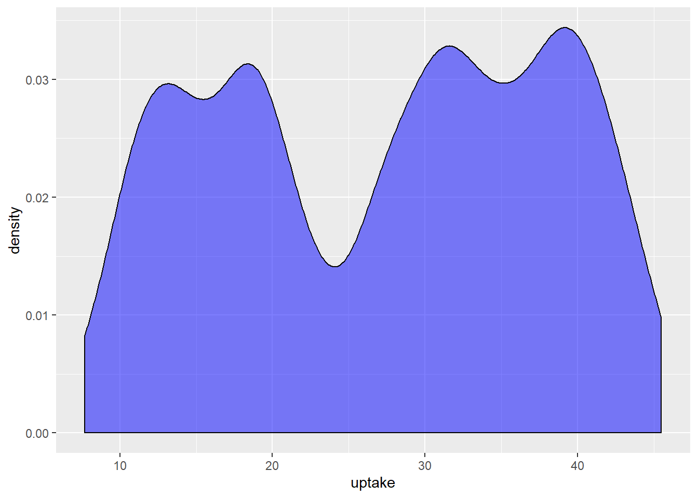
To visualize a two-way table, a stacked barplot can be created. Again, we simply pass a two-way table to the barplot function.
twoTable <- table(titanicData$survived, titanicData$sex)barplot(twoTable)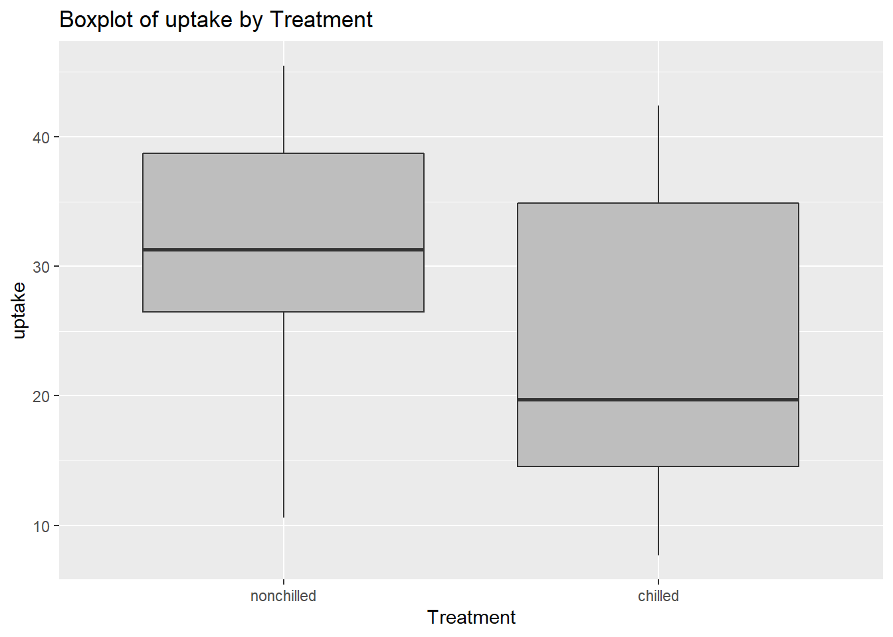
Of course, a legend is needed. Common arguments to barplot include:
legend = TRUE- `args.legend = list(title = “…”)
barplot(twoTable, legend = TRUE, args.legend = list(title="Survived"))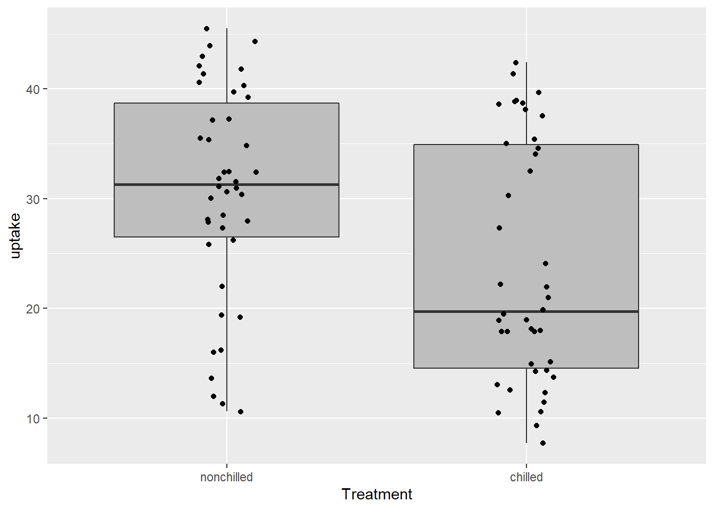
To create a Side-by-side barplot, simply pass a two-way table to barplot with an additional input of beside = TRUE.
barplot(twoTable, beside = TRUE, legend = TRUE, args.legend=list(title="Survived"))The legend can be specified more clearly by providing a character vector corresponding to the values of the first variable given to the table function.
barplot(twoTable, beside = TRUE, legend = c("Died", "Survived"),
args.legend=list(title="Survived"))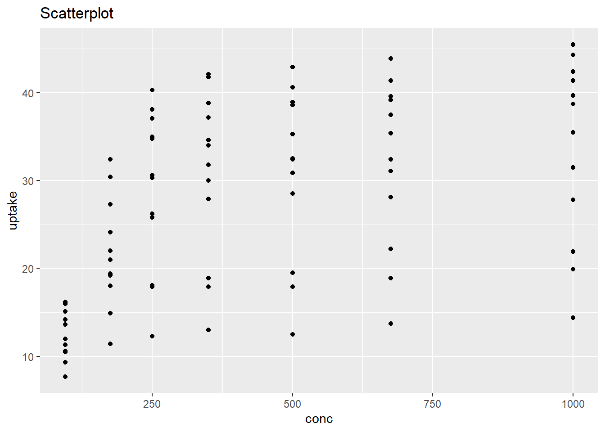
To visualize a three-way table, we essentially want to recreate this plot for each setting of the third variable. This is a little difficult in Base R and will be taken up in the ggplot section.
Next we’ll create common plots for numerical variables (variables in which entries are a numerical value where math can be performed). Recall that the main goal of summarizing numerical variables is to describe the shape, center, and spread of the distribution. Generally, this is done using a histogram, boxplot, or, in the case of two numerical variables, scatterplot.
The general process for creating these plots using Base R:
Use
hist,boxpot,plot, etc. to start a plotAnnotate the plot using functions like
text,lines,points, etc.
We’ll again look at the carbon dioxide (CO2) uptake data set.
## # A tibble: 84 x 5
## Plant Type Treatment conc uptake
## <ord> <fct> <fct> <dbl> <dbl>
## 1 Qn1 Quebec nonchilled 95 16
## 2 Qn1 Quebec nonchilled 175 30.4
## 3 Qn1 Quebec nonchilled 250 34.8
## 4 Qn1 Quebec nonchilled 350 37.2
## 5 Qn1 Quebec nonchilled 500 35.3
## # ... with 79 more rowsThe hist function creates a histogram and its main argument is a numeric vector.
hist(CO2$uptake)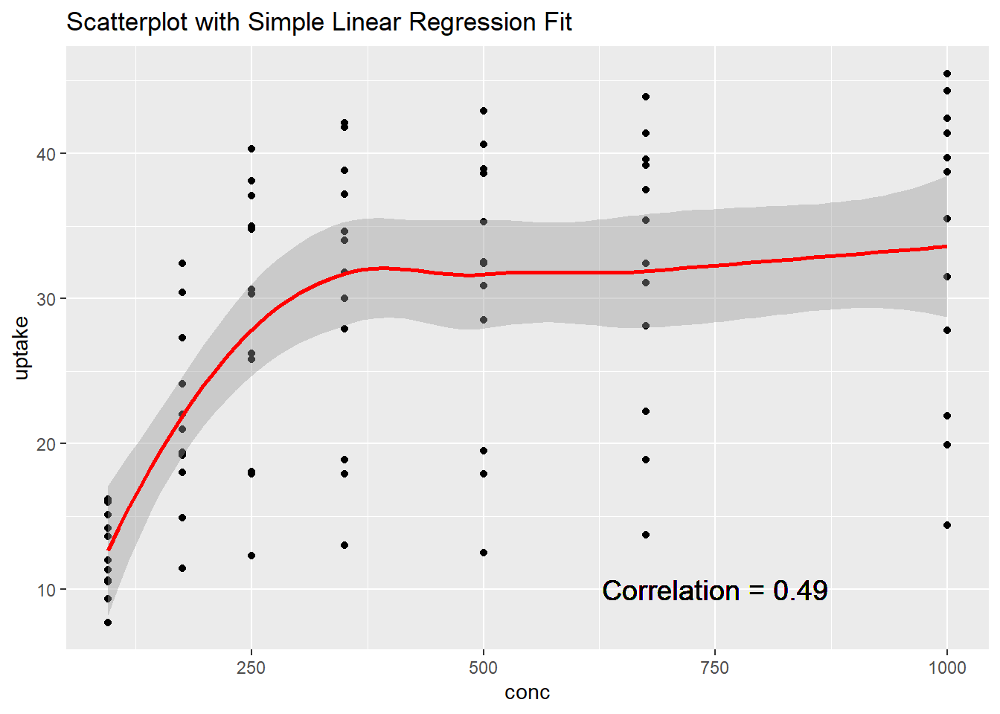
There are many ways to modify the histogram. Some common things to change would be the title (main), the bin calculation (breaks), and perhaps the color of the bars (col).
hist(CO2$uptake, main = "Histogram of Uptake Values", breaks = 15, col = "Red")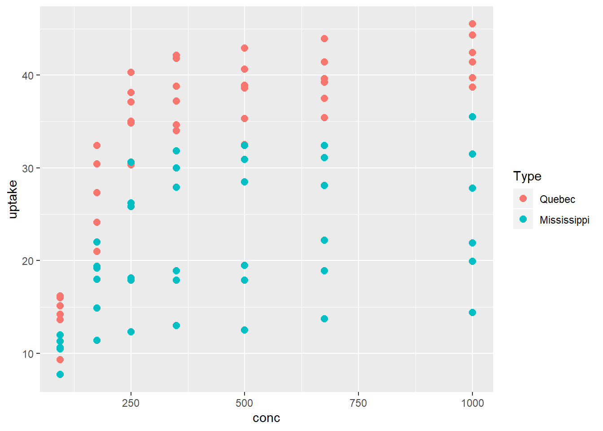
Often there is a value that you’d like to highlight by adding a line. This can be done using the abline function (lty specifies line type, lwd the line width, col the color, etc. - see help(par) for more information). abline will add a line to the most recently created plot.
hist(CO2$uptake, main = "Histogram of Uptake Values", breaks = 15, col = "Red")
abline(v = mean(CO2$uptake), lwd = 3, lty = 2, col = "Blue")A kernel plot (or smoothed histogram plot) can be created by using the plot function on the output created by the density function. density will comput kernel density estimates, by default using the normal distribution for weighting. As with hist, we pass density the numeric vector of interest.
density(CO2$uptake)##
## Call:
## density.default(x = CO2$uptake)
##
## Data: CO2$uptake (84 obs.); Bandwidth 'bw' = 4.012
##
## x y
## Min. :-4.337 Min. :2.286e-05
## 1st Qu.:11.132 1st Qu.:2.863e-03
## Median :26.600 Median :2.125e-02
## Mean :26.600 Mean :1.615e-02
## 3rd Qu.:42.068 3rd Qu.:2.649e-02
## Max. :57.537 Max. :3.095e-02plot(density(CO2$uptake), lwd = 3, col = "Blue", lty = 3)To overlay a kernel smoother on top of a histogram, we first create a histogram and specify freq = FALSE in order to put the histogram on the same scale as a density plot. Then, we use lines instead of plot on the output of the density call. lines is a function similar to abline in that it will overlay a (more general) ‘line’ on the most recently created plot.
hist(CO2$uptake, main = "Histogram of Uptake Values", col = "Red", freq = FALSE)
lines(density(CO2$uptake), lwd = 3, col = "Blue", lty = 3)
To create a boxplot, use the boxplot function. We can specify a single numeric vector as the argument. This will create a single boxplot. To create side-by-side boxplots, the formula notation we’ve used before comes in handy! If we want a boxplot of the uptake variable for each level of the Treatment variable, we pass boxplot uptake ~ Treatment and specify the data set being used (main again will change the title).
boxplot(uptake ~ Treatment, data = CO2, main = "Boxplot of Uptake by Treatment")
It is easy to change the orientation using the horizontal argument.
boxplot(uptake ~ Treatment, data = CO2,
main = "Boxplot of Uptake by Treatment", horizontal = TRUE)
Most of the graphical parameters used previously can be changed here too because boxplot has the ellipsis argument ....
boxplot(uptake ~ Treatment, data = CO2,
main = "Boxplot of Uptake by Treatment", col = "Grey", lty = 2, lwd = 2)
The ellipsis argument exists in many functions including hist, boxplot, abline, lines, and plot This argument means additional arguments not named in the inputs of the function being called can be passed. These arguments may be used by function calls within one of these functions! You can see the code used in each function by running the function with no () after it.
read_csv## function (file, col_names = TRUE, col_types = NULL, locale = default_locale(),
## na = c("", "NA"), quoted_na = TRUE, quote = "\"", comment = "",
## trim_ws = TRUE, skip = 0, n_max = Inf, guess_max = min(1000,
## n_max), progress = show_progress())
## {
## tokenizer <- tokenizer_csv(na = na, quoted_na = TRUE, quote = quote,
## comment = comment, trim_ws = trim_ws)
## read_delimited(file, tokenizer, col_names = col_names, col_types = col_types,
## locale = locale, skip = skip, comment = comment, n_max = n_max,
## guess_max = guess_max, progress = progress)
## }
## <bytecode: 0x0000000018edf538>
## <environment: namespace:readr>Some functions are ‘generic’ such as mean and plot. You need to know which mean or plot method you are trying to get the code. plot.default is the default!
plot.default## function (x, y = NULL, type = "p", xlim = NULL, ylim = NULL,
## log = "", main = NULL, sub = NULL, xlab = NULL, ylab = NULL,
## ann = par("ann"), axes = TRUE, frame.plot = axes, panel.first = NULL,
## panel.last = NULL, asp = NA, ...)
## {
## localAxis <- function(..., col, bg, pch, cex, lty, lwd) Axis(...)
## localBox <- function(..., col, bg, pch, cex, lty, lwd) box(...)
## localWindow <- function(..., col, bg, pch, cex, lty, lwd) plot.window(...)
## localTitle <- function(..., col, bg, pch, cex, lty, lwd) title(...)
## xlabel <- if (!missing(x))
## deparse(substitute(x))
## ylabel <- if (!missing(y))
## deparse(substitute(y))
## xy <- xy.coords(x, y, xlabel, ylabel, log)
## xlab <- if (is.null(xlab))
## xy$xlab
## else xlab
## ylab <- if (is.null(ylab))
## xy$ylab
## else ylab
## xlim <- if (is.null(xlim))
## range(xy$x[is.finite(xy$x)])
## else xlim
## ylim <- if (is.null(ylim))
## range(xy$y[is.finite(xy$y)])
## else ylim
## dev.hold()
## on.exit(dev.flush())
## plot.new()
## localWindow(xlim, ylim, log, asp, ...)
## panel.first
## plot.xy(xy, type, ...)
## panel.last
## if (axes) {
## localAxis(if (is.null(y))
## xy$x
## else x, side = 1, ...)
## localAxis(if (is.null(y))
## x
## else y, side = 2, ...)
## }
## if (frame.plot)
## localBox(...)
## if (ann)
## localTitle(main = main, sub = sub, xlab = xlab, ylab = ylab,
## ...)
## invisible()
## }
## <bytecode: 0x0000000019450908>
## <environment: namespace:graphics>Here you can see that some of the functions called by plot.default also have the ... argument being used. This is why the arguments like lty and col can be used even though they aren’t always named in the function inputs explicity. When working with Base R graphics, getting to know the graphical parameters (see help(par)) is important!
The plot function itself is very flexible. General use:
- Call
plot
- Give coordinates for points to be plotted as
xandy(usually)
- Change plot type with
type
- Change graphical parameters such as line type
lty, point typepch, colorcolor, etc.
- Add a legend with
legend
To create a basic scatterplot, just specify two numeric vectors of the same length.
plot(x = CO2$conc, y = CO2$uptake) By default the plot type is ‘p’ for points but many types of plots can be made by changing the type argument. The labels on the axis can be changed using xlab and ylab, the title with main, the plotting character pch, etc.
plot(x = CO2$conc, y = CO2$uptake, xlab = "Concentration", ylab = "Uptake",
main = "Scatter Plot of Concentration and Uptake", pch = 2,
ylim = c(0, max(CO2$uptake)))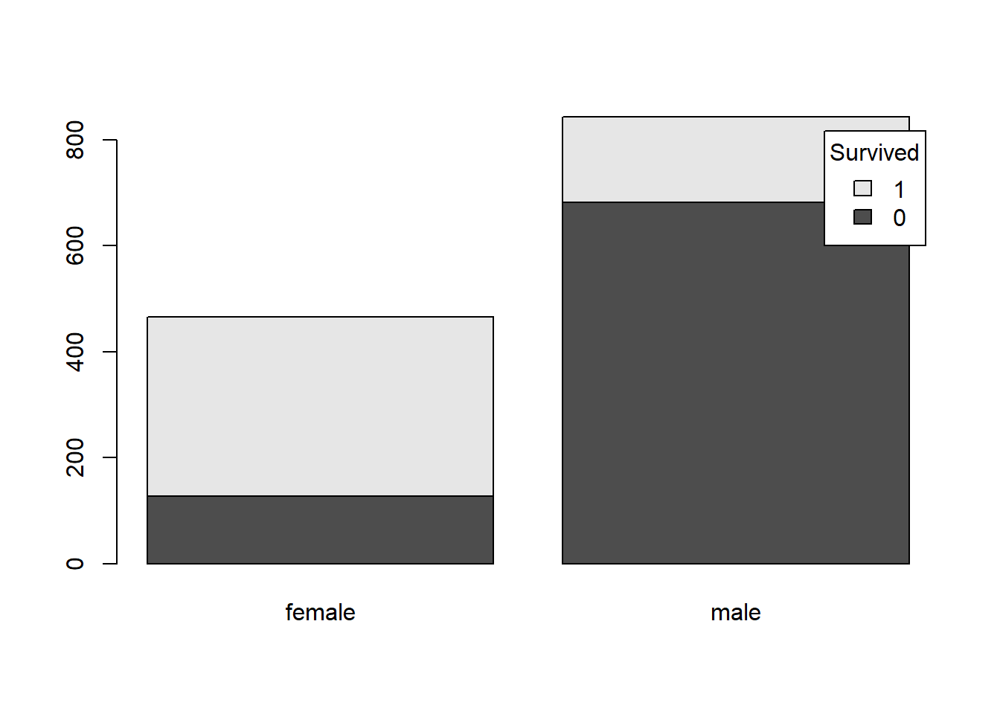
To change the plotting symbol (or color, etc.) based on another variable, create appropriate vectors that match the length of the data. For instance, we can create a symbol column on our data frame that is 3 if the Treatment is ‘chilled’ and 2 if not. This symbol column is of course the same length as the data. If we pass the pch argument symbol, plot will assign the plotting character 3 to chilled observations and 2 if not.
CO2$symbol <- ifelse(CO2$Treatment == "chilled", 3, 2)
select(CO2, uptake, Treatment, symbol)## # A tibble: 84 x 3
## uptake Treatment symbol
## <dbl> <fct> <dbl>
## 1 16 nonchilled 2
## 2 30.4 nonchilled 2
## 3 34.8 nonchilled 2
## 4 37.2 nonchilled 2
## 5 35.3 nonchilled 2
## # ... with 79 more rowsplot(x = CO2$conc, y = CO2$uptake, pch = CO2$symbol)
To instruct the reader of the plot, a legend should be added. A manual legend can be created with legend. You can use keywords to specify its location or give an x-y pair. As with the legend for barplot, we can specify the names that display. To match the plot, we should specify the pch corresponding to the levels in the same manner (this would be the same if we changed the color too!).
plot(x = CO2$conc, y = CO2$uptake, pch = CO2$symbol)
legend(x = 810, y = 18, legend = c("Chilled", "Non-Chilled"), pch = c(3, 2))
#Note that colors specified as integers come from the `palette` function
#2 is 'red' and 3 is 'green3'
plot(x = CO2$conc, y = CO2$uptake, col = CO2$symbol)
legend(x = 810, y = 18, legend = c("Chilled", "Non-Chilled"), col = c(3, 2))Plots can be adorned using abline, lines, and text to name a few. For instance, a trend line can be added with abline. We’ll use lm and our formula notation to fit a simple linear regression model (covered later) and abline knows how to plot an object of class lm.
plot(x = CO2$conc, y = CO2$uptake, xlab = "Concentration", ylab = "Uptake",
main = "Scatter Plot of Concentration and Uptake", ylim = c(0, max(CO2$uptake)))
abline(lm(uptake ~ conc, data = CO2), lwd = 2, col = "Blue")When adding text, the text function can be used. paste or paste0 can come in handy. These functions ‘paste’ together strings. paste allows the user to specify the character that separates the pasted together strings and paste0 is a special case where there is no separating character.
paste("Hi", "What", "Is", "Going", "On", "?", sep = " ")## [1] "Hi What Is Going On ?"paste("Hi", "What", "Is", "Going", "On", "?", sep = ".")## [1] "Hi.What.Is.Going.On.?"paste0("Hi", "What", "Is", "Going", "On", "?")## [1] "HiWhatIsGoingOn?"We can add the correlation value to the plot using text and assigning the x-y coordinate for the value. Here we round the value to two decimal places using round.
correlation <- cor(CO2$conc, CO2$uptake)
plot(x = CO2$conc, y = CO2$uptake, xlab = "Concentration", ylab = "Uptake",
main = "Scatter Plot of Concentration and Uptake", ylim = c(0, max(CO2$uptake)))
abline(lm(uptake ~ conc, data = CO2), lwd = 2, col = "Blue")
text(x = 750, y = 10, cex = 2,
label = paste0("Correlation = ", round(correlation, 2)))
To plot character strings instead of points, text can be used after creating an ‘empty’ plot call. plot should be called and the plotting window set, but the values to plot should be NULL (a special object in R used for things that are undefined). Next, call the text function using the usual x-y coordinates along with a label vector the same length as the data. For example, we could plot the Plant for each data point instead of a symbol.
plot(NULL, xlim = c(min(CO2$conc), max(CO2$conc)), ylim = c(min(CO2$uptake), max(CO2$uptake)),
main = "Scatter Plot of Concentration and Uptake", xlab = "Conc", ylab = "Uptake")
text(x = CO2$conc, y = CO2$uptake, label = CO2$Plant)
Note that you could specify a single character value for label and the plot would still work. This is because R ‘recycles’ the value. This is a powerful but dangerous aspect of R.
plot(NULL, xlim = c(min(CO2$conc), max(CO2$conc)), ylim = c(min(CO2$uptake), max(CO2$uptake)),
main = "Scatter Plot of Concentration and Uptake", xlab = "Conc", ylab = "Uptake")
text(x = CO2$conc, y = CO2$uptake, label = "S")
The last Base R plot functionality we’ll mention is the pairs function. This function creates basic plots for all pairs of variables when given a data frame.
pairs(iris[, 1:4])
To recap Base R plotting:
Barplot (
barploton atableobject)Histogram (
hist), Density (plot(density)orlines(density))Boxplot (
boxplot)Scatter plot (
plot)Useful functions:
lines,abline,points,textGraphical parameters:
lty,lwd,pch,cex,color
Base R creates superb plots. The main issue is that much of the plotting customizations have to be manually created. It is also a bit more work to create the same plot for each level of another variable. ggplot will automate these processes.
3.4.1.2.2 ggplot Plotting
Now that we’ve covered Base R plotting, we’ll look at plotting through ggplot2 (sort of part of the tidyverse - Cheat Sheet). The main idea is outlined below:
ggplot(data = data_frame)creates a plot instance
- Add “layers” to the system (geoms or stats)
- Creates a visualization of the data
- Creates a visualization of the data
- Modify layer “mapping” args (aes)
- Ex: size, color, and x, y location(s)
- Ex: size, color, and x, y location(s)
- Coordinate system (mostly use Cartesian plane)
- Optional: Titles, etc.
We’ll go through creation of the same plots in the Base R section.
To create a barplot we can use ggplot + geom_bar. To start, we create a base plotting object with ggplot. Here we can specify attributes of the plot in the aes function. For instance, to create a vertical bar chart we can specify the cateogrical variable of interest as x. Let’s do this for the survived variable from the titanic data set. survived is actually stored as a dbl or double in the dataset since it is coded as a 0/1 variable. The plots will look better if we explicity change this as a factor first.
titanicData$survived <- as.factor(titanicData$survived)
ggplot(data = titanicData, aes(x = survived))
Notice that no plot is made! We haven’t added a geom or stat layer yet. These are generally what you add in order to actually see something created with the plot. The base plotting object just let’s you specify global attributes like what goes on the x-axis. Having the cheat sheet nearby is highly recommend when learning to use ggplot! The geom layer we want to add is geom_bar.
ggplot(data = titanicData, aes(x = survived)) + geom_bar()
The usual practice is to save the base object and then add to it. For instance:
g <- ggplot(data = titanicData, aes(x = survived))
g + geom_bar()We won’t do this here just to help make the plots as clear as possible.
You may wonder how to modify the plot. aes() defines visual properties of objects in the plot. This is where a lot of the modification occurs. Changing these is similar to changing values of par in Base R plotting. The cheat sheet gives the most commonly used aesthetics arguments for each geom. Under geom_bar we see
d + geom_bar()
x, alpha, color, fill, linetype, size, weight
The data and aes values can be set in two ways:
‘globally’ (for all layers) via the
ggplotstatement‘locally’ (for just that layer) via the
geom,stat, etc. layer
#global
ggplot(data = titanicData, aes(x = survived)) + geom_bar()
#local
ggplot() + geom_bar(data = titanicData, aes(x = survived))To set an attribute that doesn’t depend on the data (i.e. color = 'blue'), you generally place these outside of the aes. Usually only aesthetics that need to depend on the data should go in the aes function.
Back to our barplot. We can improve the plot in a number of ways. First, we can remove the NA (missing value) category by using the drop_na function. Here we’ll remove all rows where any of the three variables we are investigating have missing values.
titanicData <- titanicData %>% drop_na(survived, sex, embarked)
g <- ggplot(data = titanicData, aes(x = survived))
g + geom_bar()
Next, we can add better labels and a title by adding the appropriate layers (new layers –> see cheat sheet!). The layers we want here are labs to set the title and x (or y) labels. To change the names on the legend we need to look at the scale_x_discrete layer. This is because the aes value’s scale we are trying to modify is ‘x’ and we are doing so for a layer with a ‘discrete’ variable (their word for categorical).
ggplot(data = titanicData, aes(x = as.character(survived))) +
geom_bar() +
labs(x = "Survival Status", title = "Bar Plot of Survival for Titanic Passengers") +
scale_x_discrete(labels = c("Died", "Survived"))
A stacked barplot can be created by using the fill aesthetic and the same process.
- Create base object
- Add geoms
- Use aes to specify aspects of the plot
The truly wonderful things about ggplot are the automatic assignment of colors, the creation of legends, and things of that nature for aes elements. This takes a lot of work from the user. Note: the group aestethic does not automatically generate a legend.
ggplot(data = titanicData, aes(x = survived, fill = sex)) + geom_bar()
Again, we can add custom labels by adding more layers.
ggplot(data = titanicData, aes(x = survived, fill = sex)) +
geom_bar() +
labs(x = "Survival Status",
title = "Bar Plot of Survival Status for Titanic Passengers") +
scale_x_discrete(labels = c("Died", "Survived")) +
scale_fill_discrete(name = "Sex", labels = c("Female","Male"))
Notice the similar adjustment for the scale using scale_*_discrete. For our aestethics, we set aes(x = survived, fill = sex). This means if we want to change one of those auto-generated scales we should use scale_aes-value_discrete.
scale_x_discrete(labels = c("Died", "Survived"))scale_fill_discrete(name = "Sex", labels = c("Female","Male"))
To turn the plot we can add the coord_flip layer.
ggplot(data = titanicData, aes(x = survived, fill = sex)) + geom_bar() +
labs(x = "Survival Status",
title = "Bar Plot of Survival Status for Titanic Passengers") +
scale_x_discrete(labels = c("Died", "Survived")) +
scale_fill_discrete(name = "Sex", labels = c("Female","Male")) +
coord_flip()
One thing that can be quite confusing when you are first using the ggplot function is that most geoms have a corresponding stat that can be used instead. For instance, look at the help for geom_bar:
geom_bar(mapping = NULL, data = NULL, stat = "count", position = "stack", ..., width = NULL, binwidth = NULL, na.rm = FALSE, show.legend = NA, inherit.aes = TRUE)
There is a stat = "count" default argument there. An equivalent plot could be create using a stat layer instead.
ggplot(data = titanicData, aes(x = survived, fill = sex)) + geom_bar()
ggplot(data = titanicData, aes(x = survived, fill = sex)) + stat_count() Sometimes you’ll need to modify the stat. For example, if you have summary data to begin with rather than the raw data, change the stat to identity.
sumData <- titanicData %>% group_by(survived, sex) %>% summarize(count = n())
ggplot(sumData, aes(x = survived, y = count, fill = sex)) +
geom_bar(stat = "identity")The side-by-side barplot can be created using the position aesthetic. position has the following values:
dodgefor side-by-side bar plot
jitterfor continuous data with many points at same values
fillstacks bars and standardises each stack to have constant height
stackstacks bars on top of each other
As the value of this aestethic doesn’t depend on the data, we do not place this argument in the aes function.
ggplot(data = titanicData, aes(x = survived, fill = sex)) +
geom_bar(position = "dodge")If we use position = fill the bars will be stacked and the bars will be standardized to have constant height. This is really useful when there are an equal number of observations (or close to it) in each category on the x-axis (for instance with some Likert scale data surveys).
ggplot(data = titanicData, aes(x = survived, fill = sex)) +
geom_bar(position = "fill")Where else does ggplot shine? What if we want to make the same type of barplot for each embarked value? Here we can use faceting! This is just another layer on the plot call.
facet_wrap(~ var) creates a plot for each setting of the variable var. You can specify nrow and ncol or let R figure it out.
ggplot(data = titanicData, aes(x = survived)) +
geom_bar(aes(fill =sex), position = "dodge") +
facet_wrap(~ embarked)
facet_grid(var1 ~ var2) creates a grid of plots for each combination of the variables var1 and var2. var1 values go across rows and var2 values go across columns. To have side-by-side or a vertical column of plots use . ~ var2 or var1 ~ ., respectively.
ggplot(data = titanicData, aes(x = survived)) +
geom_bar(aes(fill =sex), position = "dodge") +
facet_wrap(~ embarked)
Here we’ll create a grid of plots for all pclass and embarked combinations (so easy!).
ggplot(data = titanicData, aes(x = survived)) +
geom_bar(aes(fill =sex), position = "dodge") +
facet_grid(pclass ~ embarked)
Below is a recap of creating a barplot with ggplot:
Use
ggplot(data = ...) + geom_bar(aes(x = ...))With summary data, use
geom_bar(stat = identity)Stacked barplot via
aes(fill = )Side-by-side barplot via
position = dodgeFilled barplot via
position = fill
Recapping plotting with ggplot so far:
Can set local or global
aesModify titles/labels by adding more layers
Use either stat or geom layer
Faceting (multiple plots) via
facet_gridorfacet_wrapOnly need
aesif setting a mapping value that is dependent on the data (or you want to create a custom legend!)
Now we’ll create similar plots to the Base R section for our numeric variables from the CO2 uptake dataset. The process is the same:
- Create base object
- Add geoms
- Use aes to specify aspects of the plot
Let’s start by creating a histogram. This can be done with geom_bar. The easiest way to get started with a new geom is to look at the cheat sheet and the common aes values:
c + geom_histogram(binwidth = 5)x, y, alpha, color, fill, linetype, size, weight
For geom_hist, only x is really needed. Now we’ll create the histogram for the uptake variable.
g <- ggplot(CO2, aes(x = uptake))
g + geom_histogram()## `stat_bin()` using `bins = 30`. Pick better value with `binwidth`.We might modify a few attributes of the plot that are not dependent on the data. Remember, these generally are set outside of the aes function.
g + geom_histogram(color = "blue", fill = "red", size = 2, binwidth = 3)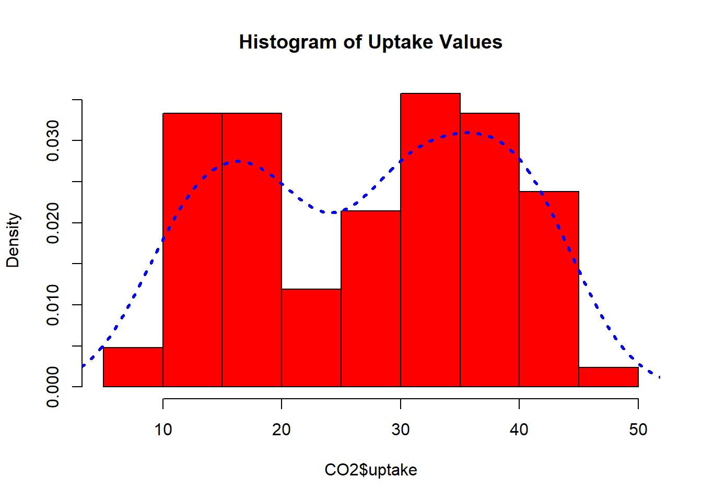
To create the kernel smoother plot (smoothed histogram), we use the geom_density layer. The common aes values from the cheat sheet are:
c + geom_density(kernel = "gaussian")
x, y, alpha, color, fill, group, linetype, size, weight
As with geom_hist, only x = is really needed. The kernel smoother for the uptake variable is created below.
ggplot(CO2, aes(x = uptake)) + geom_density()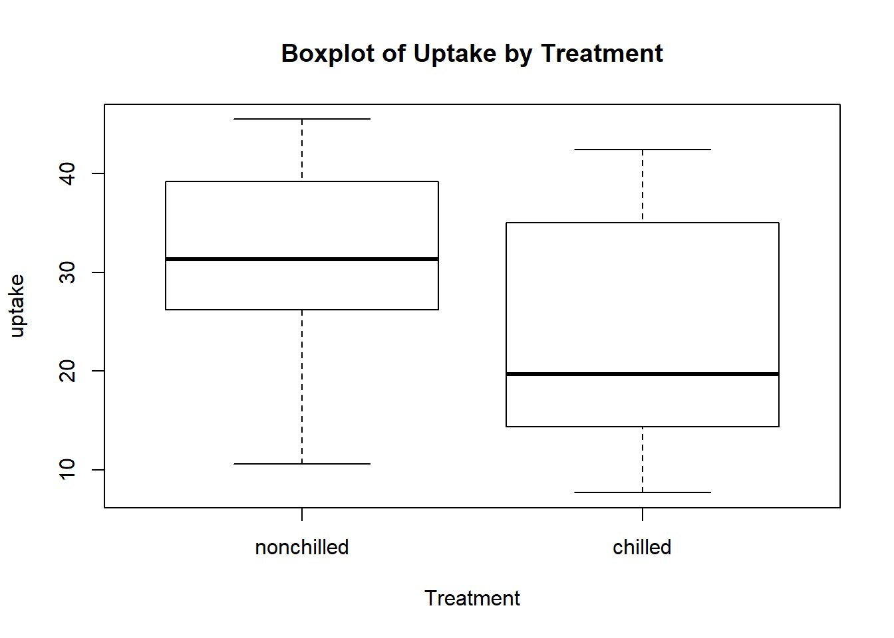
This is not a pretty plot. The fill aesthetic is usually used with geom_density. Here, we’ll fill by the Treatment variable. We’ll also change the alpha (transparency value, between 0 and 1) and the adjust (modify the kernel density calculations - 0.5 implies half the default bandwidth) aestethics.
ggplot(CO2, aes(x = uptake)) +
geom_density(adjust = 0.5, alpha = 0.5, aes(fill = Treatment))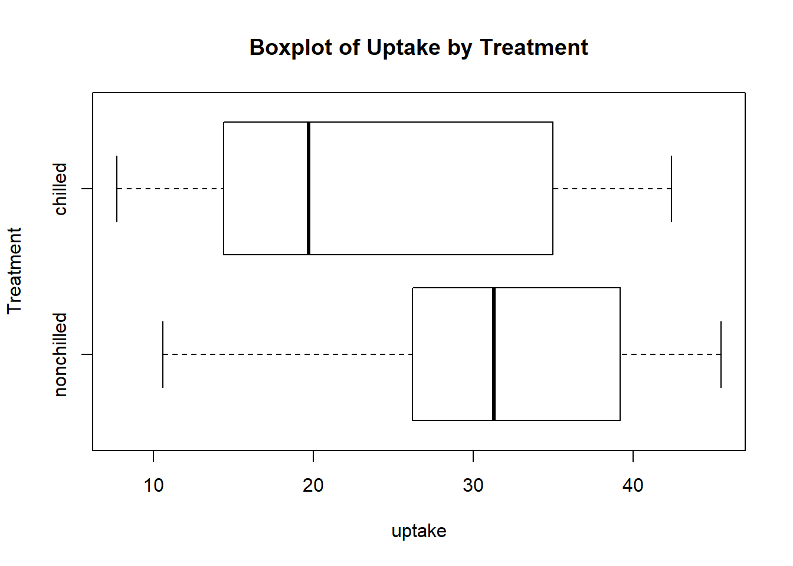
We may wish to stack the two density estimates on top of each other. Recall the position aestethic and the choices of dodge, jitter, fill, and stack.
ggplot(CO2, aes(x = uptake)) +
geom_density(adjust = 0.5, alpha = 0.5, position = "stack", aes(fill = Treatment))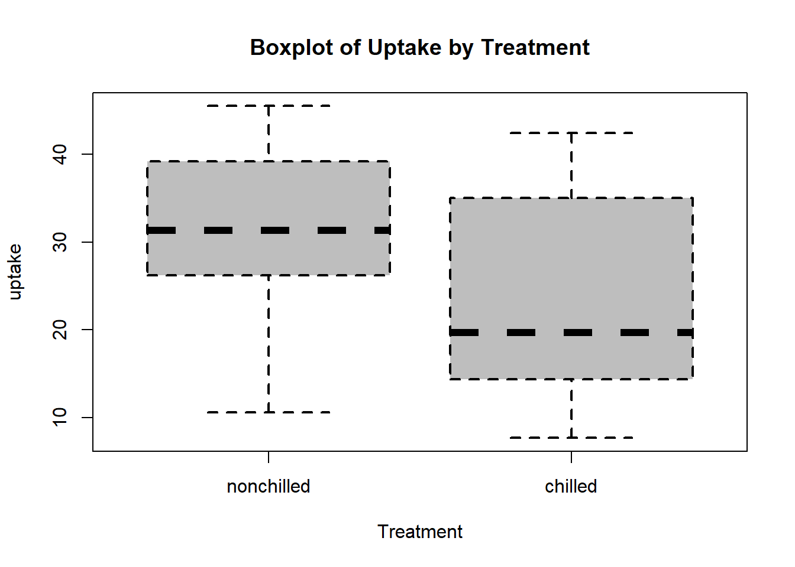
Plots can easily be overlayed, as long as they are on the same scale, by simply adding the appropriate layers. To put the histogram on the same scale as a density, we can set y = ..density.. on the geom_hist layer.
ggplot(CO2) +
geom_histogram(aes(y = ..density.., x = uptake, fill = Treatment)) +
geom_density(adjust = 0.25, alpha = 0.5, position = "stack",
aes(x = uptake, fill = Treatment)) ## `stat_bin()` using `bins = 30`. Pick better value with `binwidth`.
For these two plots, you can see it is a little beneficial to set global aes() options here. This would allow for an easy change of the fill variable for all layers!
ggplot(CO2, aes(x = uptake, fill = Treatment)) +
geom_histogram(aes(y = ..density..)) +
geom_density(adjust = 0.25, alpha = 0.5, position = "stack")To create a boxplot we can use geom_boxplot. The common aes values from the cheat sheet are:
f + geom_boxplot()
x, y, lower, middle, upper, ymax, ymin, alpha, color, fill, group, linetype, shape, size, weight
For geom_boxplot, only x =, y = are really needed. To create a single vertical boxplot, use x = "". We’ll create side-by-side boxplots of uptake for each Treatment level.
g <- ggplot(CO2, aes(x = Treatment, y = uptake))
g + geom_boxplot(fill = "grey")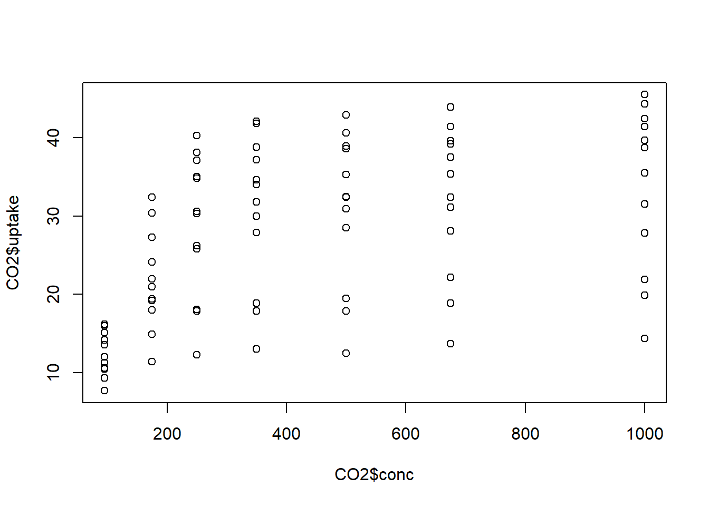
Sometimes it is useful to overlay the data values themselves on a boxplot in order to see the shape of the distribution more clearly. This can be done using the geom_jitter layer. The width argument sets how widely the points are scattered (1 = width of box).
ggplot(CO2, aes(x = Treatment, y = uptake)) +
geom_boxplot(fill = "grey") +
geom_jitter(width = 0.1)Note that the order of the layers is important!
ggplot(CO2, aes(x = Treatment, y = uptake)) +
geom_jitter(width = 0.1) +
geom_boxplot(fill = "grey")If we wanted to create these same side-by-side boxplots for each value of another variable, we can again use faceting. For instance, we can use facet_wrap with the Type variable.
ggplot(CO2, aes(x = Treatment, y = uptake)) + geom_boxplot(fill = "grey") +
geom_jitter(width = 0.1) + facet_wrap(~ Type)
Scatterplots can be created using geom_point. The common aes values from the cheat sheet are:
e + geom_point()x, y, alpha, color, fill, shape, size, stroke
For geom_point, only x =, y = are really needed.
Below is a scatterplot of the conc and uptake variables.
g <- ggplot(CO2, aes(x = conc, y = uptake))
g + geom_point()A trend lines can be easily added with geom_smooth. The default is a smoothed line. To request the simple linear regression fit, we can use method = lm. Both of these lines are added to the plot below.
ggplot(CO2, aes(x = conc, y = uptake)) + geom_point() +
geom_smooth(aes(col = "loess")) +
geom_smooth(method = lm, aes(col = "linear")) +
scale_colour_manual(name = 'Smoother', values = c('loess' = 'purple', 'linear' = 'red'),
labels = c('GAM', 'Linear'), guide = 'legend')## `geom_smooth()` using method = 'loess' and formula 'y ~ x'
You may notice something a bit odd in the call above. The value of col (color) was set inside the aes function even though it was not set to a value corresponding to the data set. This is an exception to that rule. If you want to utilize ggplot‘s automatic creation of legends, you can use the method above where labels are given to the color for each line (’loess’ and ‘linear’, respectively). scale_colour_manual is then used to create the legend. Notice the values being set assign colors to the lines here.
Text can also be added to the plot with geom_text. The correlation is added to the plot in a similar way to how it was done in the Base R section. The size argument being set to a value larger than 1 makes the text bigger.
correlation <- cor(CO2$conc, CO2$uptake)
ggplot(CO2, aes(x = conc, y = uptake)) + geom_point() +
geom_smooth(method = lm, col = "Red") +
geom_text(x = 750, y = 10, size = 5,
label = paste0("Correlation = ", round(correlation, 2)))
Using text for the points is very easy with geom_text. Just use this layer with a label variable.
ggplot(CO2, aes(x = conc, y = uptake)) +
geom_text(aes(label = Plant))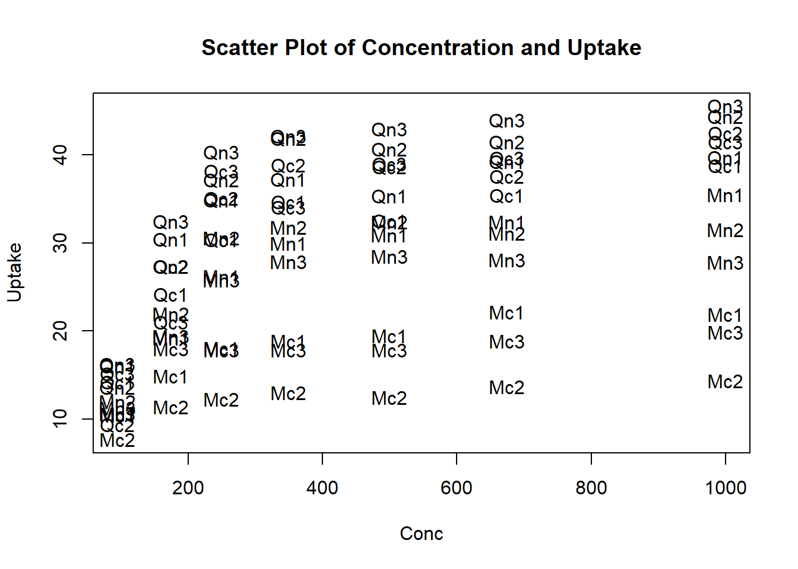
Again, if we want to create similar scatterplots for each value of another variable, we can do so with faceting. (Note: the cut function is very useful for categorizing a numeric variable.) Here we create similar scatterplots for each level of the Treatment variable.
ggplot(CO2, aes(x = conc, y = uptake)) +
geom_point(aes(color = Type), size = 2.5) +
facet_wrap(~ Treatment)Lastly, we saw the useful pairs function from Base R. There are many extension packages for ggplot that give great functionality. The GGally package has a function called ggpairs that is similar to pairs but retains the same syntax and functionality of ggplot. Remember to install the package if you haven’t done so and then read it in with the library command (or call the function directly using ::).
library(GGally)
ggpairs(iris, aes(colour = Species, alpha = 0.4))
To recap numerical variable plots using ggplot, the most common geoms are:
Histogram (
geom_hist), Density (geom_density)Boxplot (
geom_boxplot)Scatter plot (
geom_point), Smoothers (geom_smooth)Jittered points (
geom_jitter)Text on plot (
geom_text)
The syntax and functionality of ggplot is recapped below again.
Can set local or global
aesModify titles/labels by adding more layers
Use either stat or geom layer
Faceting (multiple plots) via
facet_gridorfacet_wrapOnly need
aesif setting a mapping value that is dependent on the data (or you want to create a custom legend!)General syntax:
ggplot(data = <DATA>) +
<GEOM_FUNCTION>(mapping = aes(<MAPPINGS>), stat = <STAT>, position = <POSITION>) +
<COORDINATE_FUNCTION> +
<FACET_FUNCTION> +
<LABEL_FUNCTION>
)
There are many other useful extensions such as gganimate, ggthemes, ggmap, and ggrepel.
3.4.2 SAS
This section is meant to instruct on how to produce common numerical and graphical summaries in SAS.